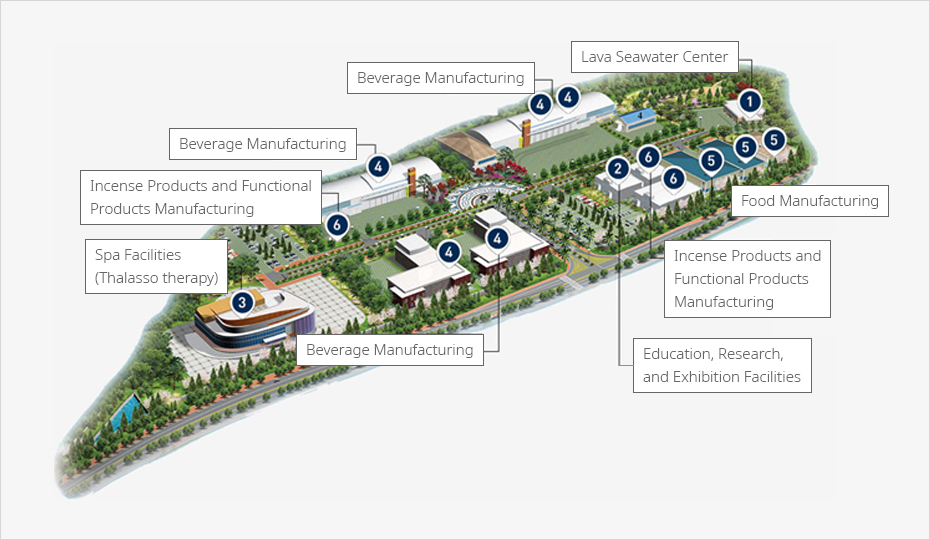
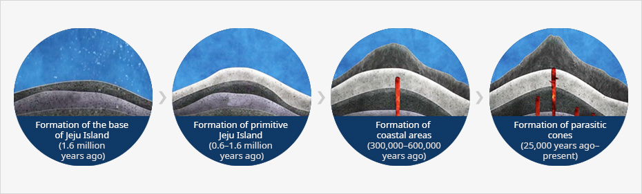
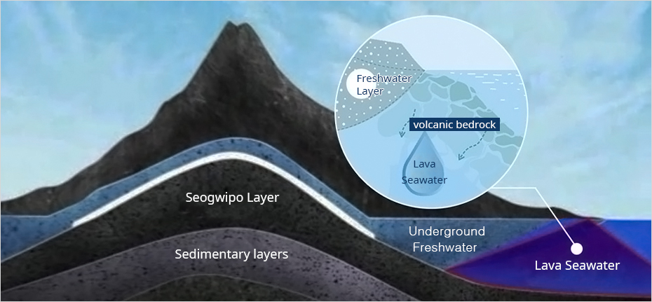
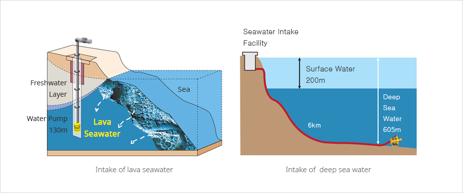
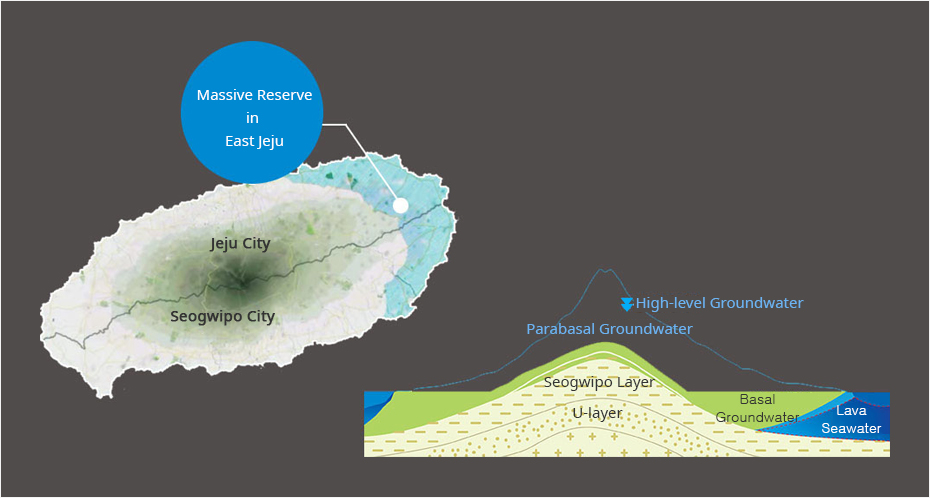

(Specialized Complex) Lava Seawater Complex
- Home
- Investment Environment
- Investment Locations
- (Specialized Complex) Lava Seawater Complex
Jeju Lava Seawater Complex
Composition of the complex



-
1Lava Seawater Center
- Infrastructure support, development of industry-academia cooperation network, support of technological development, PR and marketing
-
2Education, Research, and Exhibition Facilities
- Facilities for PR, display, sales, and education with regard to lava seawater and relevant products
-
3Spa Facilities (Thalassotherapy)
- Medical and recreational facilities providing marine therapies, which are operated in line with the tourism industry
-
4Beverage Manufacturing
- Production of potable salty ground water and functional beverages using lava seawater
-
5Food Manufacturing
- Production of foods using lava seawater (salt-dried products, functional foods, etc.)
-
6Incense Products and Functional Products Manufacturing
- Production of incense products and functional products using lava seawater
What is Lava Seawater?
Pure and Clean Water from the Pristine Jeju Sea
Lava seawater is a unique underground water resource of Jeju and contains rich minerals and nutritive salts with almost no organic material or pathogens. Creation of Jeju Island and Lava Seawater


Lava Seawater
Lava seawater is produced when seawater runs underground and is naturally filtered through volcanic bedrock. This water is a unique resource of Jeju and it contains rich minerals and nutritive salts with almost no organic material or pathogens.


Lava Seawater and Deep Sea Water
Deep sea water collection involves significant costs for the installation and management of intake pipes since it is collected from the deep sea over more than 200m.
On the other hand, lava seawater is collected from underground sources, requiring less investment. Mineral ingredients from the volcanic bedrock can be utilized for multiple purposes.
On the other hand, lava seawater is collected from underground sources, requiring less investment. Mineral ingredients from the volcanic bedrock can be utilized for multiple purposes.


Creation & Distribution of Lava Seawater
The eastern area of Jeju Island has volcanic bedrock through which seawater can easily run, which is why lava seawater is found mostly in east Jeju.


Industrial Utilization
Promotion of Jeju’s Creative Industries Utilizing Lava Seawater
Lava seawater, which contains healthy minerals such as natural calcium and magnesium, is likely to increase the value added of various products such as functional beverages and cosmetics.-
Beverages
- Potable salty ground water, functional beverages
- Mixed beverages linked with local specialties
- Isotonic beverages containing minerals
-
Cosmetics
- Repair/functional lotions, creams, and gels
- Bath and spa products
- Cleaning agents (soaps, shampoos, etc.)
-
Foods
- Functional foods such as calcium or magnesium supplements
- Fermented beverages such as tofu and yogurt
- Sauce using desalted water or concentrate
- Alcoholic beverages (traditional liquor, soju, beer)
-
Materials
- Tourism industry and experience education
- Production of eco-friendly fruits and vegetables
- Cultivation of marine organisms with high value added
Information
- Address : 2972-1 Handong-ri, Gujwa-eup, Jeju City, Jeju Special Self-Governing Province
- Contact : 064-720-3092
- Fax : 064-784-1715
- Website : http://www.jejulavawater.com